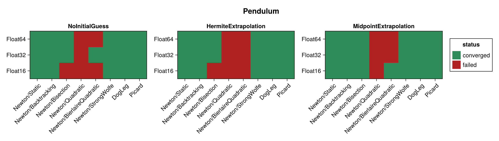
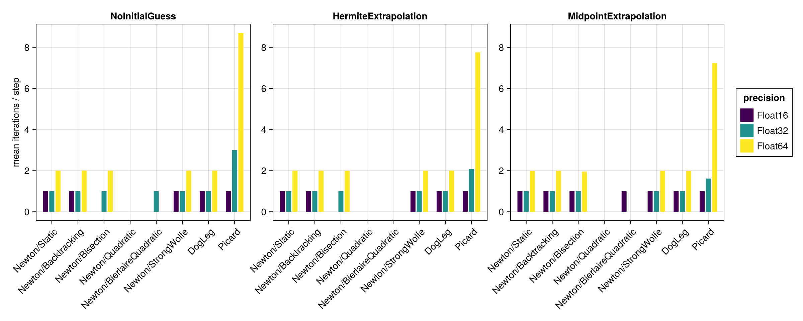
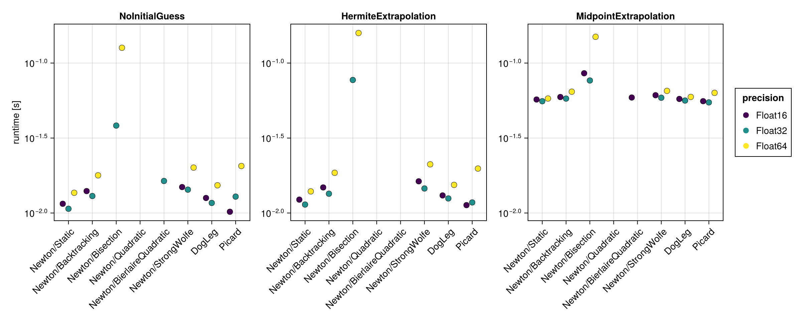
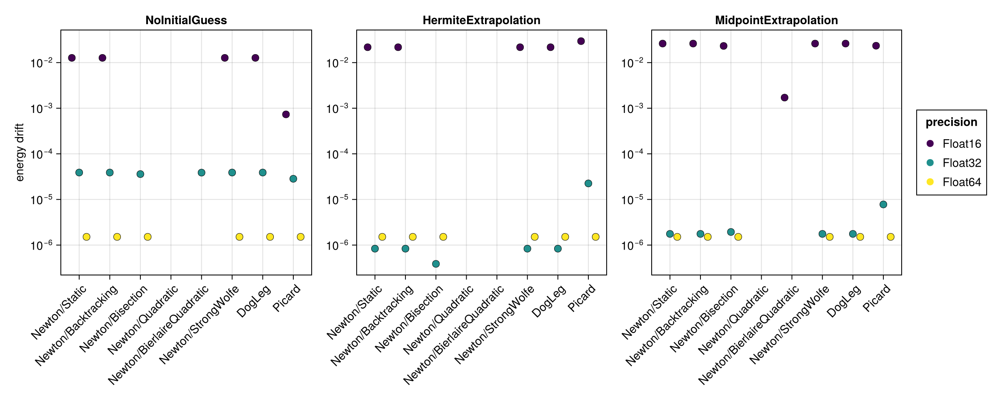
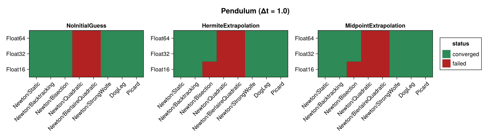
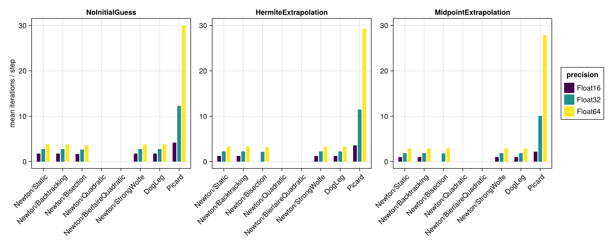
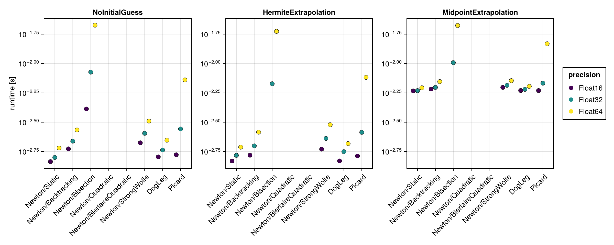
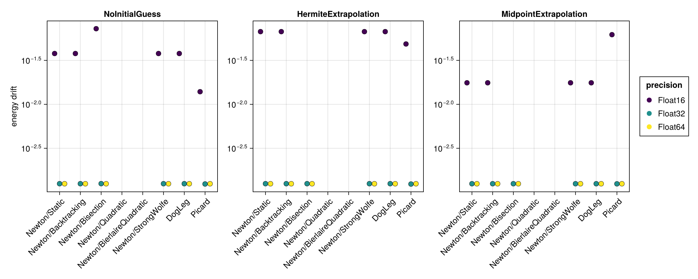

Pendulum
The mathematical pendulum ($\ddot{q} = -\sin q$) is nonlinear, so the implicit midpoint equations require genuine nonlinear iterations at every time step. This example therefore differentiates the solvers and line searches more strongly than the Harmonic Oscillator.
The benchmark below is regenerated at documentation build time with a single, fast timing pass. See the driver script scripts/pendulum.jl for accurate BenchmarkTools measurements. The results are shown first for the standard step $\Delta t = 0.1$ and then repeated for a coarse step $\Delta t = 1.0$ (see Coarse time step (Δt = 1.0)).
using SolverBenchmark
spec = pendulum_spec(timespan = (0.0, 100.0), timestep = 0.1)
df = run_benchmark(spec; timing = :quick, verbose = false, quiet = true)Convergence
plot_convergence(df; title = "Pendulum")
Nonlinear iterations
Mean number of nonlinear-solver iterations per time step (converged runs only):
plot_iterations(df)
Run time
plot_runtime(df)
Energy drift
Drift of the conserved energy $H = p^2/(2ml^2) + m g l \cos q$:
plot_energy_drift(df)
Discussion
- The problem is nonlinear, so Newton needs genuine iterations — about 2 per step at
Float64withΔt = 0.1. The robust line searches (Static,Backtracking,Bisection,StrongWolfe) andDogLegagain behave almost identically, so in this mildly nonlinear regime the line search barely affects the iteration count. Newton/Quadraticnever converges on the pendulum — the quadratic line search is not robust here.Picardneeds roughly 8 iterations per step and is, as for the harmonic oscillator, the most sensitive to the initial guess (MidpointExtrapolationfewest,NoInitialGuessmost).- Energy drift scales with precision just as for the Harmonic Oscillator.
Results table
markdown_table(summary_table(df))| precision | solver_label | initial_guess | converged | iterations_mean | runtime_s | max_residual | energy_drift |
|---|---|---|---|---|---|---|---|
| Float16 | Newton/Static | NoInitialGuess | ✓ | 1 | 0.0115 | 0 | 0.0127 |
| Float16 | Newton/Static | HermiteExtrapolation | ✓ | 1 | 0.0123 | 0 | 0.0217 |
| Float16 | Newton/Static | MidpointExtrapolation | ✓ | 1 | 0.0572 | 0 | 0.0261 |
| Float16 | Newton/Backtracking | NoInitialGuess | ✓ | 1 | 0.014 | 0 | 0.0127 |
| Float16 | Newton/Backtracking | HermiteExtrapolation | ✓ | 1 | 0.0148 | 0 | 0.0217 |
| Float16 | Newton/Backtracking | MidpointExtrapolation | ✓ | 1 | 0.0594 | 0 | 0.0261 |
| Float16 | Newton/Bisection | NoInitialGuess | ✗ | 9.81 | 0.356 | 0.00848 | — |
| Float16 | Newton/Bisection | HermiteExtrapolation | ✗ | 2.39 | 0.0858 | 0.00919 | — |
| Float16 | Newton/Bisection | MidpointExtrapolation | ✓ | 1 | 0.0855 | 0.0057 | 0.0232 |
| Float16 | Newton/Quadratic | NoInitialGuess | ✗ | — | — | — | — |
| Float16 | Newton/Quadratic | HermiteExtrapolation | ✗ | — | — | — | — |
| Float16 | Newton/Quadratic | MidpointExtrapolation | ✗ | — | — | — | — |
| Float16 | Newton/BierlaireQuadratic | NoInitialGuess | ✗ | 5.95 | 0.0372 | 0.0084 | — |
| Float16 | Newton/BierlaireQuadratic | HermiteExtrapolation | ✗ | — | — | — | — |
| Float16 | Newton/BierlaireQuadratic | MidpointExtrapolation | ✓ | 1 | 0.0589 | 0.00549 | 0.00171 |
| Float16 | Newton/StrongWolfe | NoInitialGuess | ✓ | 1 | 0.0149 | 0 | 0.0127 |
| Float16 | Newton/StrongWolfe | HermiteExtrapolation | ✓ | 1 | 0.0163 | 0 | 0.0217 |
| Float16 | Newton/StrongWolfe | MidpointExtrapolation | ✓ | 1 | 0.061 | 0 | 0.0261 |
| Float16 | DogLeg | NoInitialGuess | ✓ | 1 | 0.0126 | 0 | 0.0127 |
| Float16 | DogLeg | HermiteExtrapolation | ✓ | 1 | 0.0131 | 0 | 0.0217 |
| Float16 | DogLeg | MidpointExtrapolation | ✓ | 1 | 0.0576 | 0 | 0.0261 |
| Float16 | Picard | NoInitialGuess | ✓ | 1 | 0.0102 | 0.00229 | 0.000732 |
| Float16 | Picard | HermiteExtrapolation | ✓ | 1 | 0.0113 | 0.00405 | 0.0295 |
| Float16 | Picard | MidpointExtrapolation | ✓ | 1 | 0.0557 | 0.000345 | 0.0234 |
| Float32 | Newton/Static | NoInitialGuess | ✓ | 1 | 0.0107 | 6.26e-07 | 3.89e-05 |
| Float32 | Newton/Static | HermiteExtrapolation | ✓ | 1 | 0.0114 | 1.54e-08 | 8.34e-07 |
| Float32 | Newton/Static | MidpointExtrapolation | ✓ | 1 | 0.0557 | 1.67e-08 | 1.76e-06 |
| Float32 | Newton/Backtracking | NoInitialGuess | ✓ | 1 | 0.013 | 6.26e-07 | 3.89e-05 |
| Float32 | Newton/Backtracking | HermiteExtrapolation | ✓ | 1 | 0.0135 | 1.54e-08 | 8.34e-07 |
| Float32 | Newton/Backtracking | MidpointExtrapolation | ✓ | 1 | 0.058 | 1.67e-08 | 1.76e-06 |
| Float32 | Newton/Bisection | NoInitialGuess | ✓ | 1 | 0.0383 | 6.26e-07 | 3.6e-05 |
| Float32 | Newton/Bisection | HermiteExtrapolation | ✓ | 1 | 0.0771 | 1.67e-08 | 3.87e-07 |
| Float32 | Newton/Bisection | MidpointExtrapolation | ✓ | 1 | 0.0765 | 1.34e-08 | 1.94e-06 |
| Float32 | Newton/Quadratic | NoInitialGuess | ✗ | 64.3 | 0.531 | 6.91e-05 | — |
| Float32 | Newton/Quadratic | HermiteExtrapolation | ✗ | 73.2 | 0.607 | 0.000424 | — |
| Float32 | Newton/Quadratic | MidpointExtrapolation | ✗ | 63.9 | 0.558 | 0.000105 | — |
| Float32 | Newton/BierlaireQuadratic | NoInitialGuess | ✓ | 1 | 0.0164 | 6.26e-07 | 3.87e-05 |
| Float32 | Newton/BierlaireQuadratic | HermiteExtrapolation | ✗ | 62.7 | 0.271 | 0.000425 | — |
| Float32 | Newton/BierlaireQuadratic | MidpointExtrapolation | ✗ | 59.5 | 0.298 | 0.000105 | — |
| Float32 | Newton/StrongWolfe | NoInitialGuess | ✓ | 1 | 0.0143 | 6.26e-07 | 3.89e-05 |
| Float32 | Newton/StrongWolfe | HermiteExtrapolation | ✓ | 1 | 0.0146 | 1.54e-08 | 8.34e-07 |
| Float32 | Newton/StrongWolfe | MidpointExtrapolation | ✓ | 1 | 0.0587 | 1.67e-08 | 1.76e-06 |
| Float32 | DogLeg | NoInitialGuess | ✓ | 1 | 0.0117 | 6.26e-07 | 3.89e-05 |
| Float32 | DogLeg | HermiteExtrapolation | ✓ | 1 | 0.0125 | 1.54e-08 | 8.34e-07 |
| Float32 | DogLeg | MidpointExtrapolation | ✓ | 1 | 0.0563 | 1.67e-08 | 1.76e-06 |
| Float32 | Picard | NoInitialGuess | ✓ | 3 | 0.0129 | 9.52e-07 | 2.84e-05 |
| Float32 | Picard | HermiteExtrapolation | ✓ | 2.08 | 0.0118 | 9.49e-07 | 2.25e-05 |
| Float32 | Picard | MidpointExtrapolation | ✓ | 1.62 | 0.0547 | 9.51e-07 | 7.78e-06 |
| Float64 | Newton/Static | NoInitialGuess | ✓ | 2 | 0.0136 | 3.54e-17 | 1.51e-06 |
| Float64 | Newton/Static | HermiteExtrapolation | ✓ | 2 | 0.0139 | 6.04e-16 | 1.51e-06 |
| Float64 | Newton/Static | MidpointExtrapolation | ✓ | 1.99 | 0.058 | 1.39e-15 | 1.51e-06 |
| Float64 | Newton/Backtracking | NoInitialGuess | ✓ | 2 | 0.0178 | 3.54e-17 | 1.51e-06 |
| Float64 | Newton/Backtracking | HermiteExtrapolation | ✓ | 2 | 0.0185 | 6.04e-16 | 1.51e-06 |
| Float64 | Newton/Backtracking | MidpointExtrapolation | ✓ | 1.99 | 0.0644 | 1.39e-15 | 1.51e-06 |
| Float64 | Newton/Bisection | NoInitialGuess | ✓ | 2 | 0.126 | 5.46e-16 | 1.51e-06 |
| Float64 | Newton/Bisection | HermiteExtrapolation | ✓ | 1.98 | 0.159 | 1.77e-15 | 1.51e-06 |
| Float64 | Newton/Bisection | MidpointExtrapolation | ✓ | 1.96 | 0.15 | 1.63e-15 | 1.51e-06 |
| Float64 | Newton/Quadratic | NoInitialGuess | ✗ | 57.8 | 0.554 | 2.94e-08 | — |
| Float64 | Newton/Quadratic | HermiteExtrapolation | ✗ | 68.3 | 0.604 | 1.67e-09 | — |
| Float64 | Newton/Quadratic | MidpointExtrapolation | ✗ | 66.5 | 0.642 | 1.03e-09 | — |
| Float64 | Newton/BierlaireQuadratic | NoInitialGuess | ✗ | — | — | — | — |
| Float64 | Newton/BierlaireQuadratic | HermiteExtrapolation | ✗ | — | — | — | — |
| Float64 | Newton/BierlaireQuadratic | MidpointExtrapolation | ✗ | — | — | — | — |
| Float64 | Newton/StrongWolfe | NoInitialGuess | ✓ | 2 | 0.0201 | 3.54e-17 | 1.51e-06 |
| Float64 | Newton/StrongWolfe | HermiteExtrapolation | ✓ | 2 | 0.0211 | 6.04e-16 | 1.51e-06 |
| Float64 | Newton/StrongWolfe | MidpointExtrapolation | ✓ | 1.99 | 0.0653 | 1.39e-15 | 1.51e-06 |
| Float64 | DogLeg | NoInitialGuess | ✓ | 2 | 0.0153 | 3.54e-17 | 1.51e-06 |
| Float64 | DogLeg | HermiteExtrapolation | ✓ | 2 | 0.0154 | 6.04e-16 | 1.51e-06 |
| Float64 | DogLeg | MidpointExtrapolation | ✓ | 1.99 | 0.0595 | 1.39e-15 | 1.51e-06 |
| Float64 | Picard | NoInitialGuess | ✓ | 8.7 | 0.0206 | 1.78e-15 | 1.51e-06 |
| Float64 | Picard | HermiteExtrapolation | ✓ | 7.76 | 0.0198 | 1.76e-15 | 1.51e-06 |
| Float64 | Picard | MidpointExtrapolation | ✓ | 7.24 | 0.0633 | 1.77e-15 | 1.51e-06 |
Coarse time step (Δt = 1.0)
With a ten times larger step the equations become more strongly nonlinear, which stresses the solvers noticeably more than the $\Delta t = 0.1$ results above: Newton's iteration count rises to ≈ 3.3 per step, Picard needs ≈ 30, and Newton/BierlaireQuadratic also stops converging.
spec1 = pendulum_spec(timespan = (0.0, 100.0), timestep = 1.0)
df1 = run_benchmark(spec1; timing = :quick, verbose = false, quiet = true)Convergence
plot_convergence(df1; title = "Pendulum (Δt = 1.0)")
Nonlinear iterations
plot_iterations(df1)
Run time
plot_runtime(df1)
Energy drift
plot_energy_drift(df1)
Results table
markdown_table(summary_table(df1))| precision | solver_label | initial_guess | converged | iterations_mean | runtime_s | max_residual | energy_drift |
|---|---|---|---|---|---|---|---|
| Float16 | Newton/Static | NoInitialGuess | ✓ | 1.77 | 0.00146 | 0.00781 | 0.0378 |
| Float16 | Newton/Static | HermiteExtrapolation | ✓ | 1.25 | 0.00148 | 0.00708 | 0.0671 |
| Float16 | Newton/Static | MidpointExtrapolation | ✓ | 1 | 0.00584 | 0.00134 | 0.0176 |
| Float16 | Newton/Backtracking | NoInitialGuess | ✓ | 1.77 | 0.00188 | 0.00781 | 0.0378 |
| Float16 | Newton/Backtracking | HermiteExtrapolation | ✓ | 1.25 | 0.00166 | 0.00708 | 0.0671 |
| Float16 | Newton/Backtracking | MidpointExtrapolation | ✓ | 1 | 0.00606 | 0.00134 | 0.0176 |
| Float16 | Newton/Bisection | NoInitialGuess | ✓ | 1.69 | 0.00411 | 0.00835 | 0.0725 |
| Float16 | Newton/Bisection | HermiteExtrapolation | ✗ | 3.25 | 0.0114 | 0.00922 | — |
| Float16 | Newton/Bisection | MidpointExtrapolation | ✗ | 4.96 | 0.0208 | 0.00909 | — |
| Float16 | Newton/Quadratic | NoInitialGuess | ✗ | — | — | — | — |
| Float16 | Newton/Quadratic | HermiteExtrapolation | ✗ | — | — | — | — |
| Float16 | Newton/Quadratic | MidpointExtrapolation | ✗ | — | — | — | — |
| Float16 | Newton/BierlaireQuadratic | NoInitialGuess | ✗ | — | — | — | — |
| Float16 | Newton/BierlaireQuadratic | HermiteExtrapolation | ✗ | — | — | — | — |
| Float16 | Newton/BierlaireQuadratic | MidpointExtrapolation | ✗ | — | — | — | — |
| Float16 | Newton/StrongWolfe | NoInitialGuess | ✓ | 1.77 | 0.00211 | 0.00781 | 0.0378 |
| Float16 | Newton/StrongWolfe | HermiteExtrapolation | ✓ | 1.25 | 0.00186 | 0.00708 | 0.0671 |
| Float16 | Newton/StrongWolfe | MidpointExtrapolation | ✓ | 1 | 0.00626 | 0.00134 | 0.0176 |
| Float16 | DogLeg | NoInitialGuess | ✓ | 1.77 | 0.0016 | 0.00781 | 0.0378 |
| Float16 | DogLeg | HermiteExtrapolation | ✓ | 1.25 | 0.00148 | 0.00708 | 0.0671 |
| Float16 | DogLeg | MidpointExtrapolation | ✓ | 1 | 0.00589 | 0.00134 | 0.0176 |
| Float16 | Picard | NoInitialGuess | ✓ | 4.18 | 0.00167 | 0.00781 | 0.0139 |
| Float16 | Picard | HermiteExtrapolation | ✓ | 3.58 | 0.00163 | 0.00777 | 0.0486 |
| Float16 | Picard | MidpointExtrapolation | ✓ | 2.19 | 0.00588 | 0.00732 | 0.062 |
| Float32 | Newton/Static | NoInitialGuess | ✓ | 2.77 | 0.00158 | 8.05e-07 | 0.00125 |
| Float32 | Newton/Static | HermiteExtrapolation | ✓ | 2.25 | 0.00165 | 8.64e-07 | 0.00125 |
| Float32 | Newton/Static | MidpointExtrapolation | ✓ | 1.87 | 0.00588 | 7.75e-07 | 0.00125 |
| Float32 | Newton/Backtracking | NoInitialGuess | ✓ | 2.77 | 0.00218 | 8.05e-07 | 0.00125 |
| Float32 | Newton/Backtracking | HermiteExtrapolation | ✓ | 2.25 | 0.00199 | 8.64e-07 | 0.00125 |
| Float32 | Newton/Backtracking | MidpointExtrapolation | ✓ | 1.87 | 0.00626 | 7.75e-07 | 0.00125 |
| Float32 | Newton/Bisection | NoInitialGuess | ✓ | 2.64 | 0.00844 | 8.1e-07 | 0.00125 |
| Float32 | Newton/Bisection | HermiteExtrapolation | ✓ | 2.16 | 0.00673 | 7.33e-07 | 0.00125 |
| Float32 | Newton/Bisection | MidpointExtrapolation | ✓ | 1.8 | 0.0102 | 7.3e-07 | 0.00125 |
| Float32 | Newton/Quadratic | NoInitialGuess | ✗ | 6.76 | 0.00639 | 0.000665 | — |
| Float32 | Newton/Quadratic | HermiteExtrapolation | ✗ | 14.2 | 0.0129 | 0.000668 | — |
| Float32 | Newton/Quadratic | MidpointExtrapolation | ✗ | 57 | 0.0507 | 0.000682 | — |
| Float32 | Newton/BierlaireQuadratic | NoInitialGuess | ✗ | 6.58 | 0.00471 | 0.000627 | — |
| Float32 | Newton/BierlaireQuadratic | HermiteExtrapolation | ✗ | 10 | 0.00587 | 0.000682 | — |
| Float32 | Newton/BierlaireQuadratic | MidpointExtrapolation | ✗ | — | — | — | — |
| Float32 | Newton/StrongWolfe | NoInitialGuess | ✓ | 2.77 | 0.00254 | 8.05e-07 | 0.00125 |
| Float32 | Newton/StrongWolfe | HermiteExtrapolation | ✓ | 2.25 | 0.0023 | 8.64e-07 | 0.00125 |
| Float32 | Newton/StrongWolfe | MidpointExtrapolation | ✓ | 1.87 | 0.00651 | 7.75e-07 | 0.00125 |
| Float32 | DogLeg | NoInitialGuess | ✓ | 2.77 | 0.00183 | 8.05e-07 | 0.00125 |
| Float32 | DogLeg | HermiteExtrapolation | ✓ | 2.25 | 0.00178 | 8.64e-07 | 0.00125 |
| Float32 | DogLeg | MidpointExtrapolation | ✓ | 1.87 | 0.00603 | 7.75e-07 | 0.00125 |
| Float32 | Picard | NoInitialGuess | ✓ | 12.3 | 0.00277 | 9.54e-07 | 0.00124 |
| Float32 | Picard | HermiteExtrapolation | ✓ | 11.5 | 0.00259 | 9.42e-07 | 0.00124 |
| Float32 | Picard | MidpointExtrapolation | ✓ | 10.1 | 0.0068 | 9.47e-07 | 0.00125 |
| Float64 | Newton/Static | NoInitialGuess | ✓ | 3.8 | 0.00191 | 7.36e-16 | 0.00125 |
| Float64 | Newton/Static | HermiteExtrapolation | ✓ | 3.3 | 0.00194 | 1.67e-15 | 0.00125 |
| Float64 | Newton/Static | MidpointExtrapolation | ✓ | 2.91 | 0.00622 | 9.45e-16 | 0.00125 |
| Float64 | Newton/Backtracking | NoInitialGuess | ✓ | 3.8 | 0.00272 | 7.36e-16 | 0.00125 |
| Float64 | Newton/Backtracking | HermiteExtrapolation | ✓ | 3.3 | 0.0026 | 1.67e-15 | 0.00125 |
| Float64 | Newton/Backtracking | MidpointExtrapolation | ✓ | 2.91 | 0.00701 | 9.45e-16 | 0.00125 |
| Float64 | Newton/Bisection | NoInitialGuess | ✓ | 3.65 | 0.0212 | 1.73e-15 | 0.00125 |
| Float64 | Newton/Bisection | HermiteExtrapolation | ✓ | 3.22 | 0.0188 | 1.74e-15 | 0.00125 |
| Float64 | Newton/Bisection | MidpointExtrapolation | ✓ | 2.91 | 0.0211 | 7.22e-16 | 0.00125 |
| Float64 | Newton/Quadratic | NoInitialGuess | ✗ | 5.31 | 0.016 | 2.21e-08 | — |
| Float64 | Newton/Quadratic | HermiteExtrapolation | ✗ | 14.5 | 0.0195 | 1.85e-08 | — |
| Float64 | Newton/Quadratic | MidpointExtrapolation | ✗ | 33.6 | 0.0406 | 6.35e-09 | — |
| Float64 | Newton/BierlaireQuadratic | NoInitialGuess | ✗ | — | — | — | — |
| Float64 | Newton/BierlaireQuadratic | HermiteExtrapolation | ✗ | — | — | — | — |
| Float64 | Newton/BierlaireQuadratic | MidpointExtrapolation | ✗ | — | — | — | — |
| Float64 | Newton/StrongWolfe | NoInitialGuess | ✓ | 3.8 | 0.00323 | 7.36e-16 | 0.00125 |
| Float64 | Newton/StrongWolfe | HermiteExtrapolation | ✓ | 3.3 | 0.00301 | 1.67e-15 | 0.00125 |
| Float64 | Newton/StrongWolfe | MidpointExtrapolation | ✓ | 2.91 | 0.00715 | 9.45e-16 | 0.00125 |
| Float64 | DogLeg | NoInitialGuess | ✓ | 3.8 | 0.00222 | 7.36e-16 | 0.00125 |
| Float64 | DogLeg | HermiteExtrapolation | ✓ | 3.3 | 0.00208 | 1.67e-15 | 0.00125 |
| Float64 | DogLeg | MidpointExtrapolation | ✓ | 2.91 | 0.00639 | 9.45e-16 | 0.00125 |
| Float64 | Picard | NoInitialGuess | ✓ | 30.1 | 0.00726 | 1.75e-15 | 0.00125 |
| Float64 | Picard | HermiteExtrapolation | ✓ | 29.3 | 0.00762 | 1.75e-15 | 0.00125 |
| Float64 | Picard | MidpointExtrapolation | ✓ | 27.9 | 0.0147 | 1.73e-15 | 0.00125 |